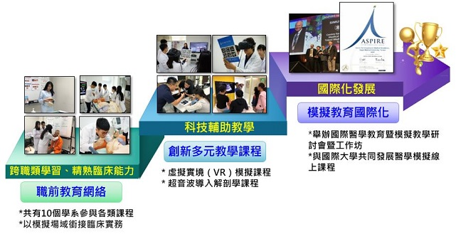
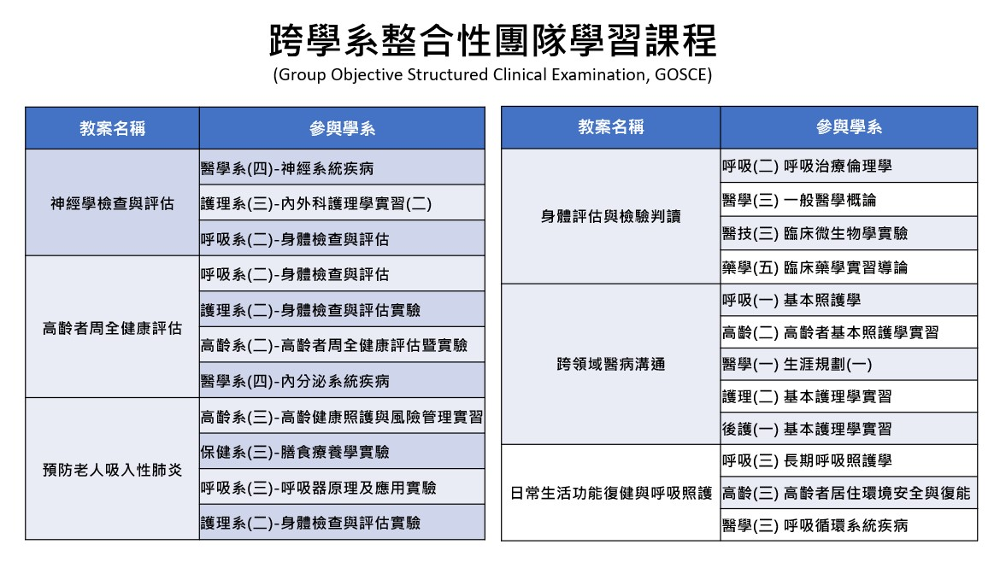
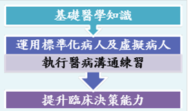

中心課程地圖
i
北醫大模擬教育課程| 授課講師 | 各學系開課老師 |
|---|---|
| 報名截止日 |
本中心97學年度起推動醫學模擬教育課程，主導之課程類型包括：TRM（3個學系，13個教案）、GOSCE（11個學系，6個教案）、與iOSCE（5個學系，14個教案）等，至今共有11個學系參與，總產出33個教案。然而，各學系為求學生未來職場的適應力與通過國考測驗的挑戰，另執行OSCE教案，來訓練模擬考試情境，共計9個學系進行，研發教案數則為27個教案。

【一】開發實境團隊協作課程（TRM）
實境團隊協作課程（TRM）開設於醫學系六年級，以利醫學生在最後一哩路上順利銜接臨床實務。在專業領域實習生涯裡，許多繁瑣的臨床工作，卻不見得有人教過，希望透過本計畫讓學生在實習過程中，藉由模擬日常職場方式，學習如何與醫療團隊的合作，以順利完成每個任務，也藉由課程，讓學生學會領導一個團隊須具備的溝通技巧以及醫學倫理與法律相關思維，訓練學生於跨領域團隊合作之情境中學習醫學倫理、溝通能力及團隊資源管理(Team Resource Management, TRM)等知識、技能和態度。

【二】發展整合性團隊學習課程教案（GOSCE）
GOSCE課程聚焦在讓各系間的學員了解其他職類的臨床業務內容，於課程既有之跨團隊醫學模擬教育中，加入「醫學人文」、「醫學倫理法律」及「同儕溝通」要素，引導學生學習觀察、反思、批判、討論的技巧，並培養組織領導能力、主動學習、溝通能力與團隊精神。利用「跨學系整合性團隊學習課程」(Group Objective Structural Clinical Examination, GOSCE)教學和學習考核模式，以學習成果為導向，逆推式地規劃課程內容與實踐程序，將課程內容配合模擬人、模具或標準化病人的演出，以分站方式進行，期望不同學系學生進入臨床前進行合作暖身。
【三】發展整合式客觀結構式臨床測驗（iOSCE）
為精進學生臨床技能學習，落實以成果為導向之教學模式，iOSCE課程開設於醫學系五年級本計畫將規範學生於畢業前需具備一定之專業臨床技能，除醫學系學生需通過臨床技能測驗(Objective Structural Clinical Examination, OSCE)國考認證外，各職類學生均需強化知識運用於臨床診療的決策能力與醫病溝通能力。除強化技能課程教案與鼓勵各職類臨床教師投入教學外，更進一步設計iOSCE(Integrated Objective Structural Clinical Examination, iOSCE)課程，配合數位教材，以線上虛擬醫學教學軟體(Diagnosis & Reasoning, DxR)模擬學習進階診斷技能。

【四】科技結合模擬教學課程 ( VR )
虛擬實境臨床整合課程為醫學系二年級選修課程，由本中心製作高級心臟救命術(ACLS)之虛擬實境教材，透過全景影片，學員可選擇不同視角，清楚地觀摩急救團隊如何流暢的分工合作，並成功救回因心肌梗塞而失去脈搏的病人。